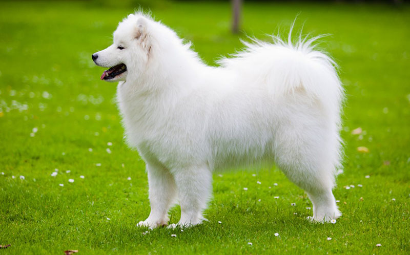

-Chó Samoyed có xuất xứ từ vùng núi Taiga, Tây Bắc Siberia – Nga.
-Cũng giống như Husky chúng cũng có cơ thể mạnh mẽ, dẻo dai, lớp lông dày có thể kéo xe tuyết trong thời gian dài.
-Chó Samoyed có địa vị rất cao trong xã hội người Samoyede giúp họ vận chuyển lương thực, săn bắt thú rừng và bảo vệ khỏi kẻ thù.
Samoyed

-Tại Việt Nam, một chú chó Samoyed đã được nuôi dưỡng có thể thích nghi với khí hậu nhiệt đới có giá từ 8-10 triệu.